Боковик: почему в него не надо лезть
Большинство слитых депозитов случается не на резком движении, а в вялом диапазоне, где «ничего не происходит». Разбираем, как узнать боковик, что он делает с головой, почему объём позиции в нём важнее точки входа и почему кривая доходности умеет застрять в диапазоне точно так же, как цена. В конце — разбор одиннадцати реальных сделок из одной сессии.
01 / ЧТО ЭТОБоковик — это не «пауза перед движением». Это отдельный режим рынка
Пока не научишься отличать режим рынка от собственного желания торговать, любая стратегия будет работать через раз.
Боковик (флэт, диапазон, консолидация) — состояние, когда цена ходит между двумя уровнями и не обновляет экстремумы. Нет ни восходящей, ни нисходящей структуры: каждый новый максимум не выше предыдущего, каждый новый минимум не ниже предыдущего. Рынок не решает, куда идти, и в этом состоянии может провести часы и дни.
Как его узнать за 10 секунд
- Два и более касания верхней границы и столько же — нижней.
- Ширина диапазона — примерно 1–2 ATR. Если цена мечется на 8–10 ATR, это не боковик, а неопределённость, и торговать её ещё опаснее.
- Свечи-«пила»: длинные тени, тела маленькие, направление меняется каждые 1–3 свечи.
- Объём падает или рваный. Настоящего набора позиции на границах не видно.
- Структура сломана: на старшем таймфрейме нет ни растущих максимумов, ни падающих.
Слева — рабочая зона: цена дважды делает вид, что пробила границу, и возвращается внутрь. Стопы, стоящие «за уровнем», собираются именно здесь. Справа — настоящее движение, но оно начинается только после того, как рынок определился. Проблема в том, что до этого момента вы уже три раза вошли и получили три стопа.
Консолидация внутри тренда (флаг, вымпел) — это не боковик. Она узкая, короткая, объём в ней затухает, а рынок уже выбрал направление. Торговать флэт и торговать флаг — два разных занятия с разной логикой.
02 / ПОЧЕМУ ТЕРЯЮТВ боковике нет движения, которое оплачивает ваши издержки и ошибки
Арифметика здесь неумолима: шум есть, а хода — нет.
1. Шум выглядит как сигнал
Если диапазон шириной 2%, цена проходит эти 2% вверх-вниз пять-семь раз за день. Каждое такое движение выглядит как «началось». Стоп в 1% внутри такого диапазона — это не защита, это ставка на то, что рынок перестанет дышать. Он не перестанет.
2. Издержки съедают счёт сами по себе
Комиссия 0,05–0,1% туда-обратно плюс спред (на альтах он шире, чем кажется по графику). Возьмём 0,08% за круг. Двадцать сделок за день в боковике — это 1,6% счёта только за участие. При риске 1% на сделку это уже больше 1,5R в минус — ещё до того, как вы ошиблись хотя бы раз.
3. Соотношение риск/прибыль внутри канала плохое по построению
Внутри диапазона стоп приходится ставить за ближнюю границу (иначе его выбьет шумом), а цель — у противоположной. Расстояние до стопа получается сопоставимым с расстоянием до цели или больше. При R:R около 1:1 вам нужен винрейт выше 55%, чтобы просто не терять. В тренде R:R 1:3 достигается естественно — там это не проблема.
4. Ложные пробои — это и есть механика боковика
Диапазон существует потому, что крупный участник набирает или распределяет позицию. Самый дешёвый способ это сделать — выбить стопы за границами, где скопилась ликвидность. Ваш стоп стоит ровно там, где его ищут. Это не паранойя, это структура рынка: ликвидность притягивает цену.
«От границы не пробьёт, там же уровень». Пробивает — именно потому, что там все.
«Возьму маленький профит у противоположной границы». Один вылет по стопу стирает пять таких профитов.
«Он уже час ходит — значит, предсказуем». Час предсказуемости и одна минута, которая всё забирает.
Боковик не платит. Он забирает время, комиссию, стопы и — что дороже всего — привычку входить без причины. Из боковика вы выходите не с убытком, а с испорченной дисциплиной.
03 / КАК ОТЛИЧИТЬТренд, боковик и неопределённость — три разных решения
Один и тот же график требует разных действий в зависимости от режима.
| Признак | Тренд | Боковик | Неопределённость |
|---|---|---|---|
| Структура | HH/HL или LH/LL | равные экстремумы | рваная, без логики |
| ATR | растёт или стабилен | падает | скачет в разы |
| Объём | растёт на импульсе | затухает | хаотичный |
| Поведение на границе | пробой держится | возврат внутрь | прыжки через уровень |
| Что работает | продолжение, вход на откате | ничего. ожидание | тоже ничего |
| Стоп | за структурой, узкий | шире диапазона | не имеет смысла |
| Объём позиции | полный расчётный | в 2 раза меньше | ноль. вне рынка |
| Правильное действие | торговать | ждать пробой + ретест | закрыть терминал |
В тренде шум — это возможность войти дешевле. В боковике тот же шум — это и есть весь рынок: за ним ничего нет.
04 / ЧТО ДЕЛАТЬПять правил вместо героизма
Не «торговать аккуратнее», а именно не торговать лишнее.
- Не торговать внутри диапазона. Ни от границ, ни «на отскок», ни «на опережение». Внутри диапазона у вас нет статистического преимущества, зато есть комиссия и спред.
- Ждать подтверждённый пробой. Подтверждение — это не первая свеча за уровнем, а закрытие тела за границей + возврат к уровню (ретест), который удержался + рост объёма. Да, вход хуже по цене. Зато он не вылетает через две минуты.
- Если очень хочется — только в сторону старшего тренда. Флэт на 15-минутке при восходящем дневном графике — это пауза, а не разворот. Но объём всё равно меньше, потому что стоп шире.
- Ноль сделок — это тоже результат. День без сделок не «потрачен». Он сохранён. Счёт дня считается в процентах, а не в количестве входов.
- Выходить из режима «надо что-то сделать». Если единственная причина входа — скука, это не сетап. Это желание. Про это — следующий раздел.
05 / ПСИХОЛОГИЯБоковик — это тест не на анализ, а на терпение
Рынок в диапазоне даёт много «событий» и ни одного повода. Мозг этого не различает.
В тренде вас подгоняет движение: не вошёл — поезд ушёл. В боковике всё наоборот: ничего не происходит, и именно поэтому рука тянется к кнопке. Скука — самый недооценённый источник убытков в трейдинге, и она сильнее жадности, потому что действует постоянно.
Скука: дофамин от процесса вместо результата
Мозг получает награду не за прибыль, а за действие — за нажатие кнопки, за то, что «я в позиции, я работаю». В тренде этих нажатий мало, и награда привязана к результату. В боковике нажатий становится много, и награда привязывается к самому факту входа.
Дальше механика простая: чем чаще вы входите, тем меньше значения имеет каждая отдельная сделка — и тем меньше вы её анализируете. Пять минут в боковике = пять поводов войти, из которых ни один не обоснован.
Ложная предсказуемость: «он же четыре раза отбивался»
Каждое касание уровня делает его более очевидным для всех. Чем красивее диапазон выглядит, тем плотнее за его границами стоят стопы — и тем выгоднее их выбить.
«Четыре раза отбивался» — это не статистика, это описание того, что пятый раз может стать прорывом. Вы не знаете, какой из них будет настоящим. Значит, вы не торгуете внутри.
Отыгрыш: стоп → злость → вход в обратную сторону → второй стоп
Самая дорогая последовательность в боковике. Цена выбивает стоп за верхней границей, вы злитесь и открываете шорт — «раз пробило и вернулось, значит, вниз». Цена возвращается к середине, потом снова идёт вверх, и второй стоп забирает ещё столько же.
Итог — два стопа на одну идею, то есть 2R вместо 1R. И самое неприятное: вторую сделку вы не планировали, поэтому не считали ни риск, ни инвалидацию.
Тильт-спираль: она ломает не рынок, а размер позиции
Убыток → «надо отбить» → объём ×2 → убыток → объём ×3 → один стоп стирает неделю. Спираль всегда идёт через объём, никогда — через качество входа.
Поэтому техническое правило должно быть внешним, а не «я постараюсь»: два стопа за день или −3% от депозита — терминал закрыт. Не «ещё одну сделку посмотрю», а закрыт.
Иллюзия работы: восемь уровней вместо ответа «торговать нечего»
В боковике хочется «разобраться»: нарисовать сетку уровней, найти паттерн, подождать «подтверждения» на младшем таймфрейме. Внешне это выглядит как анализ, по сути — это тревога, одетая в анализ. Признак: вы ищете не возможность войти, а способ оправдать желание войти.
Тест на одну минуту: если бы у меня сегодня уже была недельная норма прибыли, я бы открыл эту сделку? Если ответ «нет» — дело не в рынке.
Ритуал на 60 секунд перед входом
- Пауза. Минимум 5 минут между сделками, даже если «сетап очевиден».
- Вопрос на инвалидацию. «Что именно отменит мою идею и по какой цене?» Нет ответа — нет идеи.
- Оценка состояния 1–10. Устал, злой, спешу, отыгрываюсь — это 4. Ниже 6 не торгуем.
- Три вдоха. Банально, но переводит из режима «догнать» в режим «посчитать».
- Запись. Одна строка: пара, причина входа, стоп, риск. Если строку не пишешь — сделка не готова.
Дисциплина — это не «не входить плохо». Это заранее известный ответ на вопрос «в каком режиме я сейчас торгую». Когда ответ есть, боковик перестаёт быть соблазном: он становится просто временем ожидания.
06 / ОБЪЁМ ПОЗИЦИИОбъём определяется стопом, а не уверенностью
Главная связь с боковиком: шум шире → стоп шире → объём меньше. Автоматически, без обсуждений.
Объём позиции — не «сколько я хочу заработать», а следствие расстояния до стопа. Сначала вы находите место, где идея ломается, потом считаете объём. Не наоборот. Если считать наоборот (сначала объём, потом «где-нибудь стоп»), стоп всегда оказывается там, где удобно психике, а не там, где ломается структура.
Формула
Риск в деньгах = Депозит × Риск%
Объём позиции ($) = Риск в деньгах ÷ Расстояние до стопа (%)
Объём в монетах = Объём позиции ($) ÷ Цена входа
Пример: депозит 1 000 $, риск 1% = 10 $. Стоп в 2,5% от входа. Объём = 10 ÷ 0,025 = 400 $ номиналом. Всё остальное — арифметика.
Как это работает в боковике
В диапазоне стоп нужно ставить шире — иначе шум выбьет его без всякой идеи. Шире стоп означает меньший объём при том же риске. Это не наказание, это математика: вы платите объёмом за право находиться в более шумном месте.
Одинаковый риск — 10 $ — при разном стопе. Чем шире стоп, тем меньше объём. Это и есть баланс.
Оставить привычный объём, но поставить стоп ближе, «чтобы влезть». Технически риск тот же, но вероятность вылета по шуму вырастает в разы: в боковике цена проходит 1% просто на дыхании. Так получается серия из четырёх-пяти стопов подряд на идее, которая в итоге сработала — только вас в ней уже нет.
Плечо — это не объём
Плечо уменьшает только маржу, которую держит биржа. Риск определяется стопом и объёмом. Позиция 400 $ при плече 20× и при плече 3× рискует одинаковыми 10 $ — разница лишь в том, сколько денег заморожено и как быстро придёт ликвидация, если стоп не сработает. Поэтому «поставлю плечо побольше, чтобы заработать больше» — это не увеличение прибыли, а увеличение скорости потери контроля.
Баланс объёма: три правила
Один риск на сделку. Все входы — 1R. Тогда результат считается в R, и статистика читается, а не угадывается.
Суммарный риск ≤ 3%. Три корреляционные сделки (BTC, ETH, SOL) — это по сути одна сделка, а не три.
После двух стопов — риск вдвое меньше до первой плюсовой сделки. Не «отбить», а снизить нагрузку.
Калькулятор объёма
Введите свои числа — объём пересчитается сразу. Расстояние до стопа берётся по модулю, так что подходит и для лонга, и для шорта.
Калькулятор считает только объём и риск. Он не оценивает качество сетапа — это по-прежнему ваша работа.
07 / КРИВАЯ ДОХОДНОСТИКривая доходности тоже уходит в боковик
Отдельные сделки могут выглядеть нормально, а кумулятивная кривая при этом две недели не может выйти из диапазона.
Кривая доходности — такой же график, как и всё остальное, и у неё тоже есть режимы: тренд вверх, тренд вниз и боковик. Последний опаснее всего, потому что внешне выглядит как нормальная работа: сделки идут, цифры шевелятся, а по факту за две недели не заработано ничего.
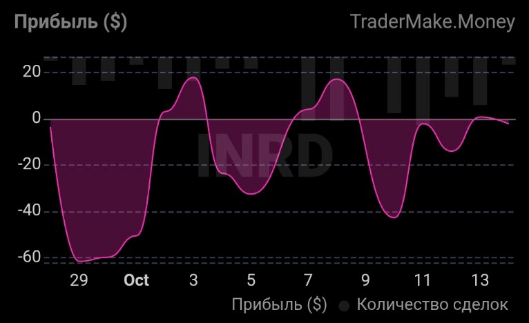
Кумулятивная прибыль в долларах за две недели. Размах — от −60 $ до +18 $, ноль пересекается много раз, нового максимума нет ни разу. Это ровно тот же боковик, только не на цене, а на вашем счёте. Столбики на фоне — количество сделок: их много, а результат около нуля.
Что видно на этой кривой
- Старт в минус. За первые дни счёт уходит в просадку примерно до −60 $ — это серия стопов подряд, а не один неудачный вход.
- Отскок к +18 $ — и сразу снова вниз, к −30 $. Потом опять вверх, к +18 $. Потом провал к −45 $ и возврат к нулю.
- Ни одного нового максимума с первого дня наблюдения. Кривая ходит вокруг нуля, как цена внутри диапазона.
- Итог за две недели — около нуля при размахе больше 75 $ и большом количестве сделок.
Именно так выглядит торговля в боковике, только в деньгах. Активность есть, издержки уплачены, нервы потрачены, результата нет. И — что важнее — на этой кривой уже видно, где именно принимается неправильное решение.
Это участок сразу после −60 $. Именно там включается «надо отбить»: растёт количество сделок, растёт объём, а рынок в этот момент не платит вообще — он в диапазоне. Просадка на кривой и есть тот триггер, который заставляет лезть в боковик.
Три правила работы с кривой
Кривая пилит — снижаешь активность. Пока нет нового максимума, риск 0,5% вместо 1% и максимум одна-две сделки в день. Не потому что «нельзя», а потому что рынок сейчас не платит.
Полный объём нужно вернуть, а не «заслужить страданием». Кривая обновила максимум — вернули полный риск. Кривая в диапазоне — работаете половинным.
Считайте не прибыль, а три метрики: максимальная просадка, длина серии убытков, время без нового максимума. Прибыль — это следствие, а не цель недели.
Кривая доходности — это зеркало вашей дисциплины, а не оценка вашей ценности. Две недели около нуля при размахе 75 $ означают, что проблема не в точке входа, а в количестве входов и в размере позиции. И там же лежит решение: меньше сделок, меньше объём, больше ожидания.
08 / РАЗБОР ВАШИХ СДЕЛОКОдиннадцать сделок, разобранные по одной
Все примеры ниже — ваши. Это одна торговая сессия: четыре инструмента, три таймфрейма, одиннадцать карточек.
Ниже — не «хорошие» и «плохие» сделки, а разбор того, что видно на скринах: таймфрейм, направление, отмеченные уровни, расстояние между ними и результат. Всё, что нельзя увидеть на скрине — причину входа, состояние рынка в моменте, эмоции — я не додумываю.
Считаем аккуратно: это арифметика по цифрам на скринах, без комиссий и без предположений о том, как сделки закрывались. Размер позиции, о котором речь в сделке 11, — расчётная величина: сумма результата, делённая на процент, при допущении, что оба числа относятся к одной позиции. Но даже так картина однозначная: день держится на одной сделке. Уберите шорт LUMIA — и минус. Именно об этом раздел 02: боковик не платит, а серия мелких убытков съедает всё, что принесла одна хорошая сделка.
Группа 1. Вход после импульса: движение уже прошло
Сделки 01, 02, 08, 10 — покупка на продолжении уже состоявшегося роста.
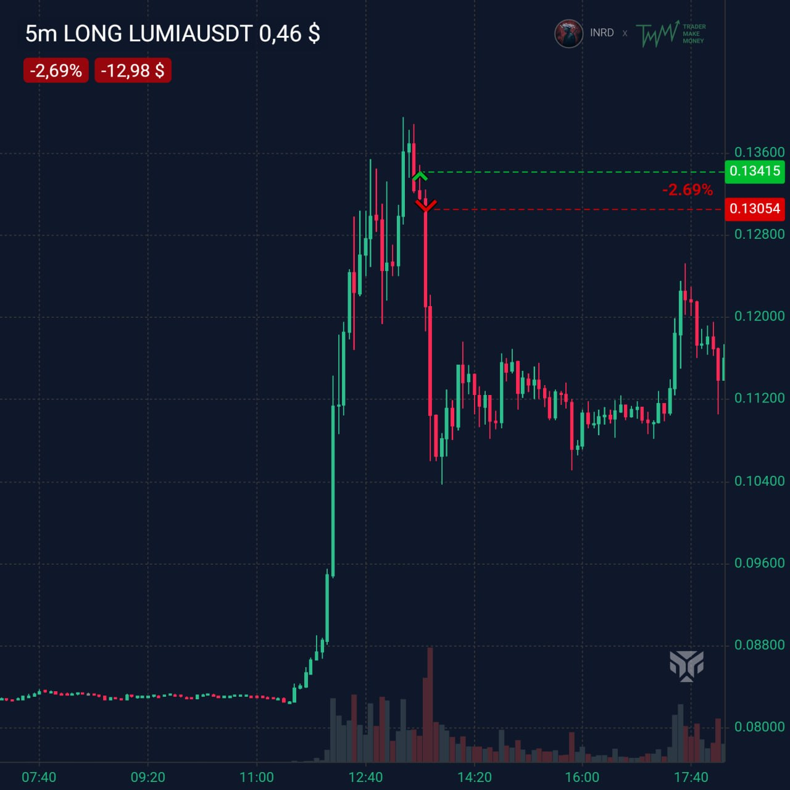
5 минут · LONG · LUMIAUSDT
−2,69% · −12,98 $- Таймфрейм5 минут
- НаправлениеLONG
- Отмеченные уровни0,13415 → 0,13054
- Расстояние2,69%
Лонг взят на вершине вертикальной памп-свечи: за полтора часа пара прошла с 0,082 до 0,1335, то есть +65%. Стоп 2,69% — это меньше, чем одно колебание внутри такой свечи. Дальше цена ушла к 0,106 и вернулась к 0,121 только к вечеру. Вход в продолжение импульса — это ставка на то, что рынок пойдёт без отката. Без отката он не идёт.
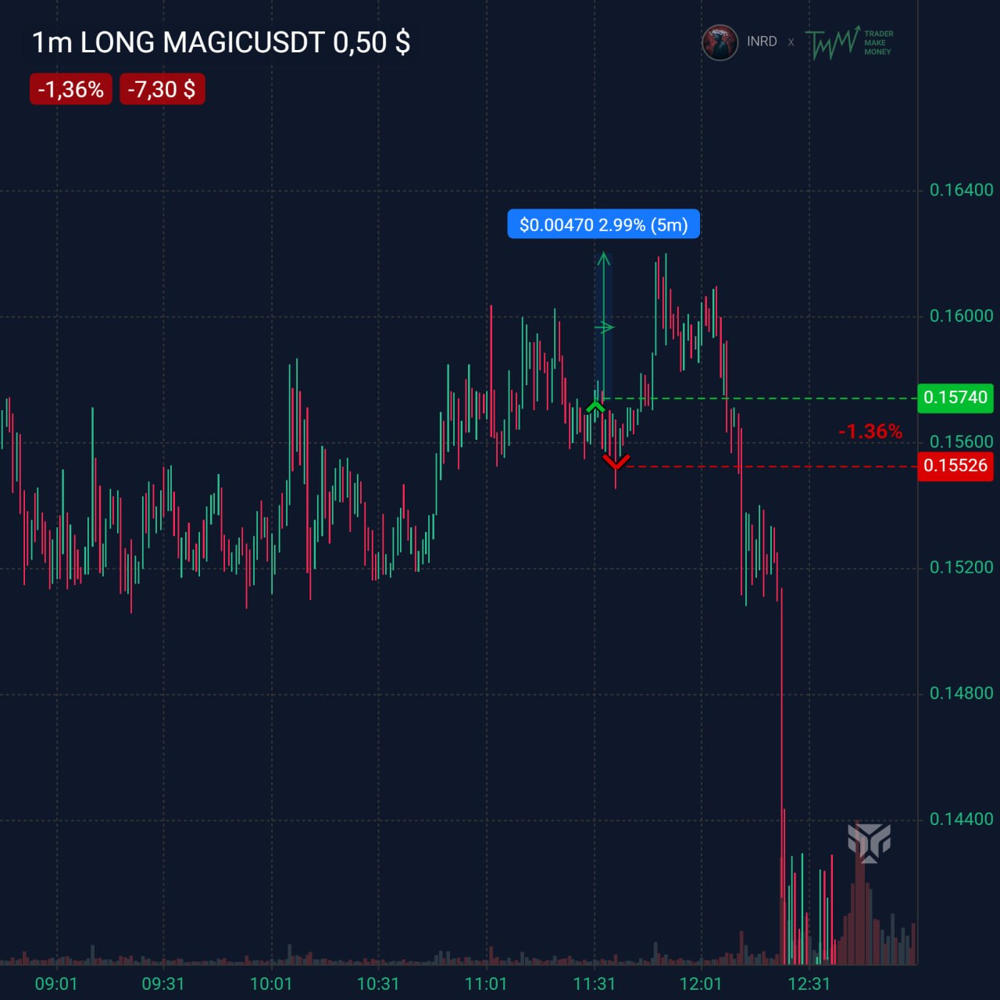
1 минута · LONG · MAGICUSDT
−1,36% · −7,30 $- Таймфрейм1 минута
- НаправлениеLONG
- Отмеченные уровни0,15740 → 0,15526
- Расстояние1,36%
На скрине есть измеритель хода: 2,99% за 5 минут — это обычное поведение инструмента. Ваш стоп — 1,36%, вдвое меньше. Уровень задело почти сразу, а через полчаса цена стояла на 0,162, то есть выше входа. Чуть позже этот же инструмент ушёл вниз на 36% (сделка 10) — значит, дело не только в тесном стопе: сама зона входа была плохой.
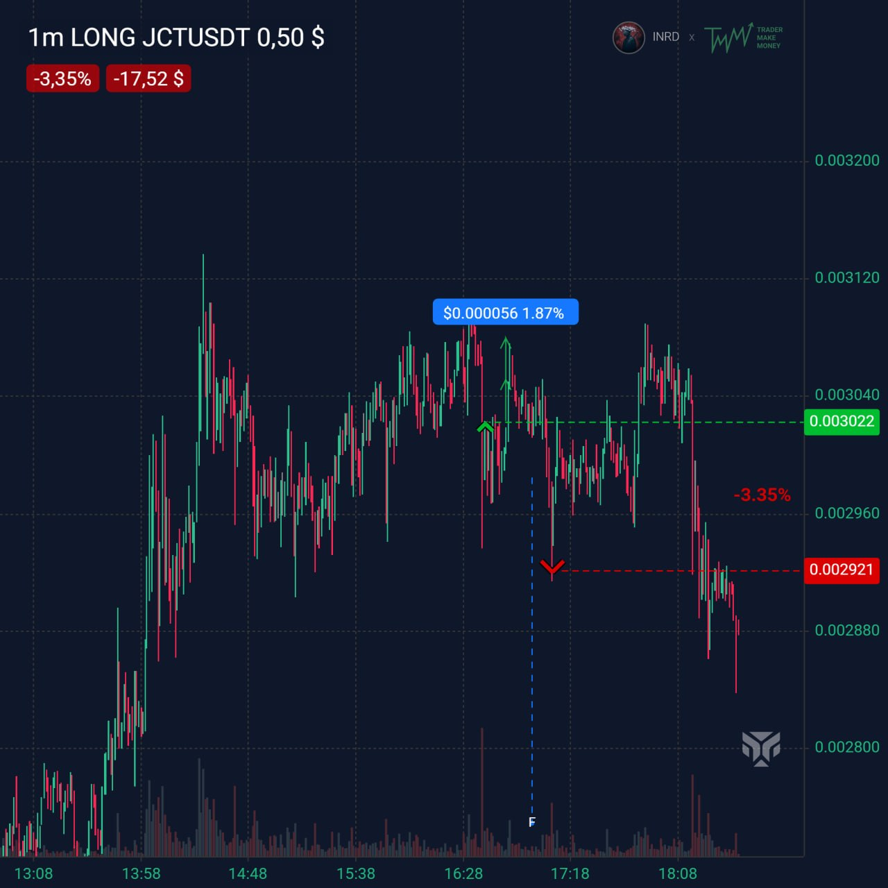
1 минута · LONG · JCTUSDT
−3,35% · −17,52 $- Таймфрейм1 минута
- НаправлениеLONG
- Отмеченные уровни0,003022 → 0,002921
- Расстояние3,35%
Самый большой убыток дня и самый широкий стоп в подборке — 3,35%. Но измеритель на скрине показывает 1,87% за одну минуту: ваш стоп — это меньше двух минут обычного движения инструмента. Плюс вход в тот же боковик 0,00295–0,00305, где цена простояла больше трёх часов.
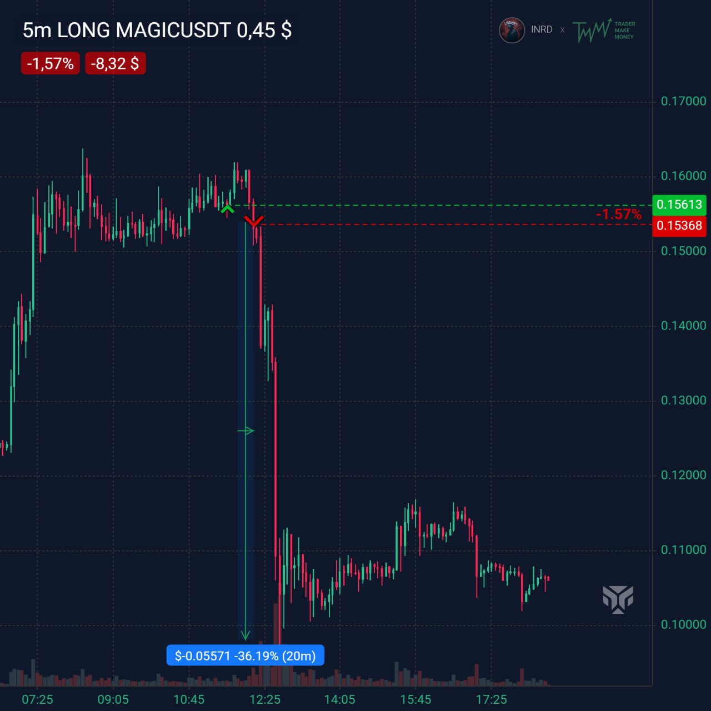
5 минут · LONG · MAGICUSDT
−1,57% · −8,32 $- Таймфрейм5 минут
- НаправлениеLONG
- Отмеченные уровни0,15613 → 0,15368
- Расстояние1,57%
Вход в верхней части утреннего диапазона 0,152–0,162, стоп 1,57%. Через полчаса инструмент сложился на −36,19% за 20 минут (это цифра с измерителя на скрине). Тут не спас бы никакой разумный стоп: вопрос не в стопе, а в том, что риск обвала в этой точке не оценивался.
Группа 2. Вход внутри диапазона: стоп выбило шумом
Сделки 04, 05, 06, 07 — цена ходит в узком коридоре, вход в его середине, стоп внутри ширины коридора.
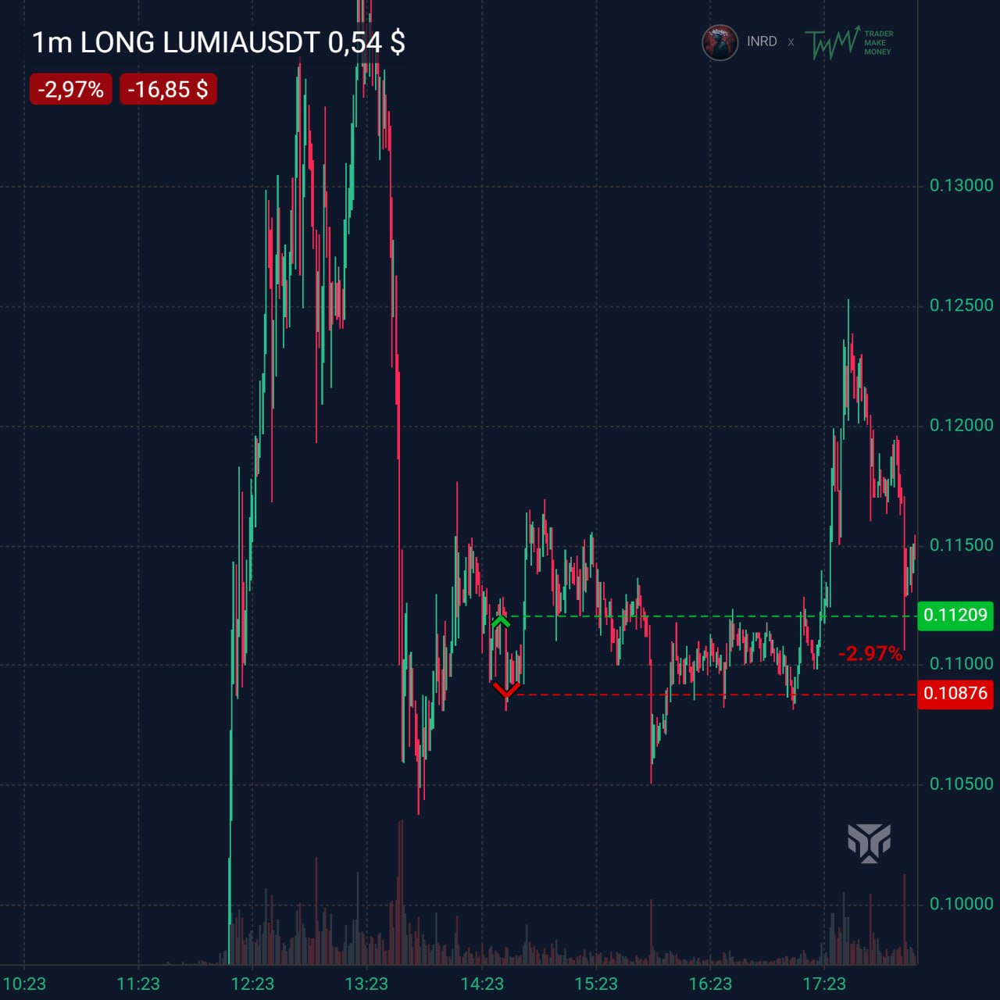
1 минута · LONG · LUMIAUSDT
−2,97% · −16,85 $- Таймфрейм1 минута
- НаправлениеLONG
- Отмеченные уровни0,11209 → 0,10876
- Расстояние2,97%
После обвала с 0,13 цена больше трёх часов ходила в диапазоне 0,108–0,116 — это чистый боковик из раздела 01. Вход стоял ровно в середине диапазона, а стоп 2,97% — внутри его ширины. Рынок выбил стоп шумом и через три часа ушёл на 0,125, то есть выше входа. Внутри диапазона вы платите стопом за то, что рынок ещё не решил.
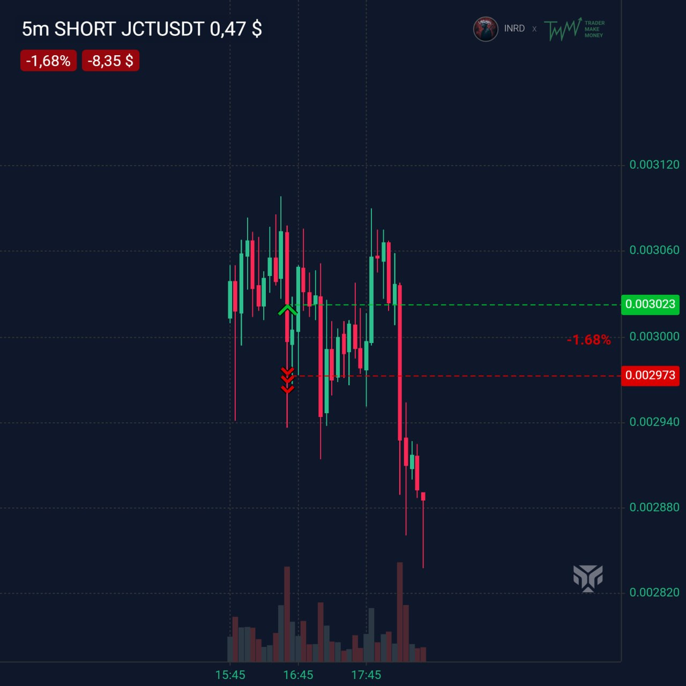
5 минут · SHORT · JCTUSDT
−1,68% · −8,35 $- Таймфрейм5 минут
- НаправлениеSHORT
- Отмеченные уровни0,003023 → 0,002973
- Расстояние1,68%
Два часа цена ходила в диапазоне 0,00294–0,00306 (ширина около 4%), а стоп стоял 1,68% — внутри типичного хода одной 5-минутной свечи. Сделка закрылась в минус, и почти сразу после этого диапазон развалился вниз до 0,00282. Движение, на которое вы ставили, случилось — но уже без вас.
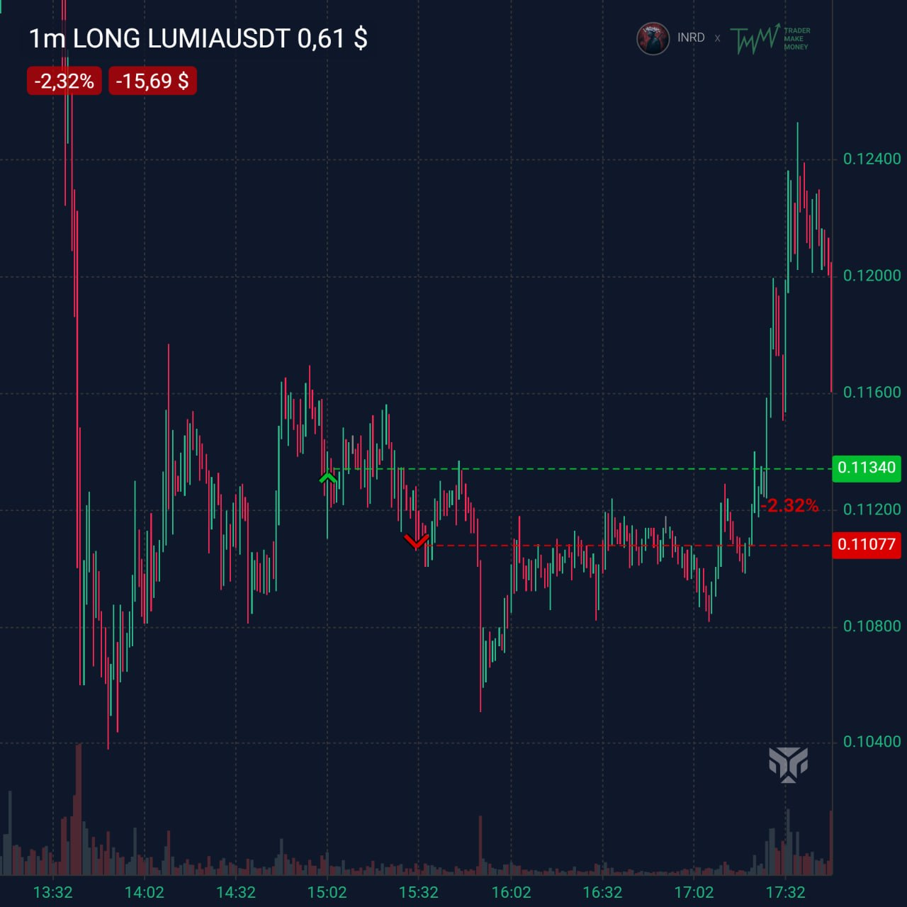
1 минута · LONG · LUMIAUSDT
−2,32% · −15,69 $- Таймфрейм1 минута
- НаправлениеLONG
- Отмеченные уровни0,11340 → 0,11077
- Расстояние2,32%
Почти копия сделки 04 — и по месту входа, и по ошибке. Разница в другом: размер позиции здесь больше (0,61 против 0,54), хотя рынок не изменился, а предыдущая попытка в этом же диапазоне уже дала минус. Объём вырос там, где его надо было уменьшить.
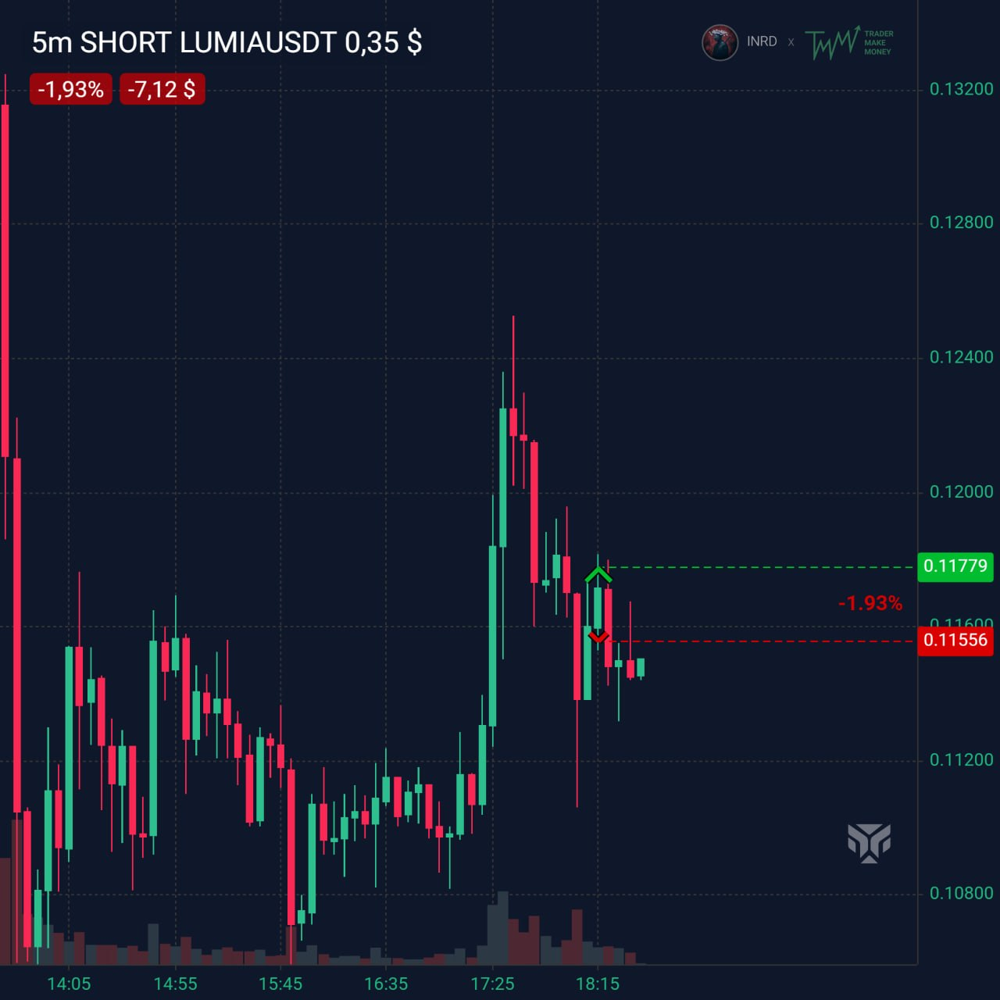
5 минут · SHORT · LUMIAUSDT
−1,93% · −7,12 $- Таймфрейм5 минут
- НаправлениеSHORT
- Отмеченные уровни0,11779 → 0,11556
- Расстояние1,93%
Шорт взят после рывка с 0,111 к 0,1245, стоп 1,93%. Цена ещё раз сходила вверх, задела уровень, и только потом откатилась к 0,1155. Та же ошибка, что и в лонгах 04 и 06, только в другую сторону: внутри диапазона стоп ставят близко к цене, потому что «уровень рядом».
Группа 3. Сделка, которая вытянула день
Сделка 03 — единственный крупный плюс за сессию.
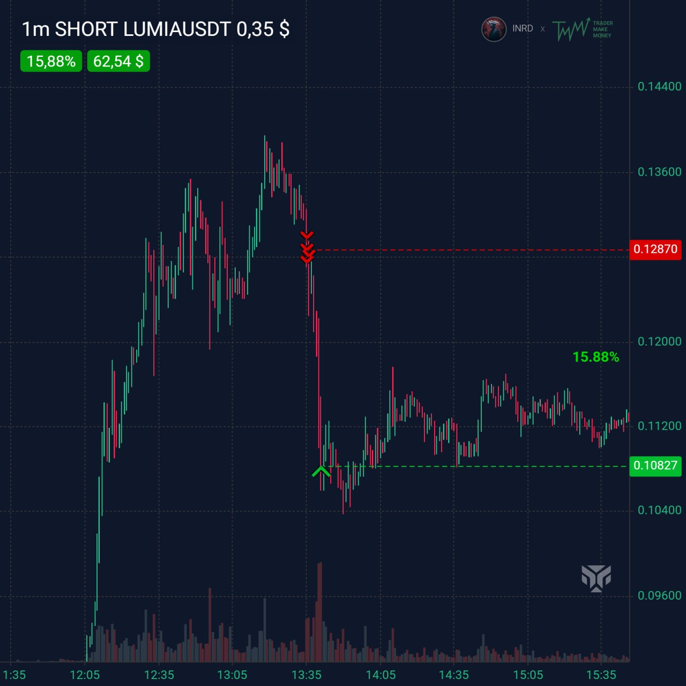
1 минута · SHORT · LUMIAUSDT
+15,88% · +62,54 $- Таймфрейм1 минута
- НаправлениеSHORT
- Отмеченные уровни0,12870 → 0,10827
- Расстояние15,88%
Единственная крупная сделка дня. Посмотрите, где вход: не на вершине (вершина 0,140), а на 8% ниже — уже после того, как параболический рост сломался. Это вход по факту, а не по прогнозу. Такие сделки нельзя заказать, их можно только поймать. И вся остальная работа сводится к тому, чтобы дожить до них, ничего не потеряв.
Группа 4. Мелкие плюсы и разъехавшийся объём
Сделки 09 и 11 — обе в плюсе, но по разным причинам.
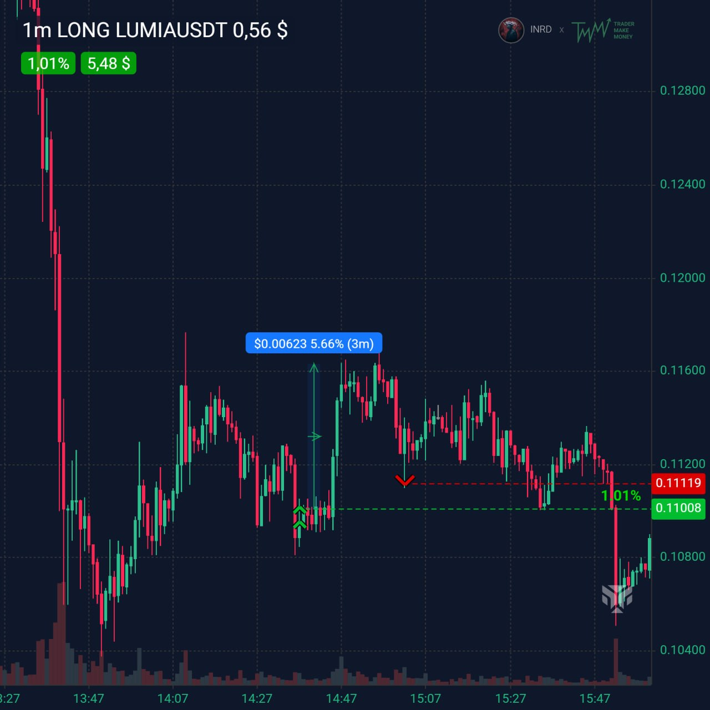
1 минута · LONG · LUMIAUSDT
+1,01% · +5,48 $- Таймфрейм1 минута
- НаправлениеLONG
- Отмеченные уровни0,11008 → 0,11119
- Расстояние1,01%
Плюс есть, но он в четыре раза меньше среднего минуса (11,77 $) и меньше одного обычного хода инструмента: измеритель на скрине — 6,23% за 3 минуты. Плюс в 1% при таких ходах означает, что позицию закрыли до того, как движение началось.
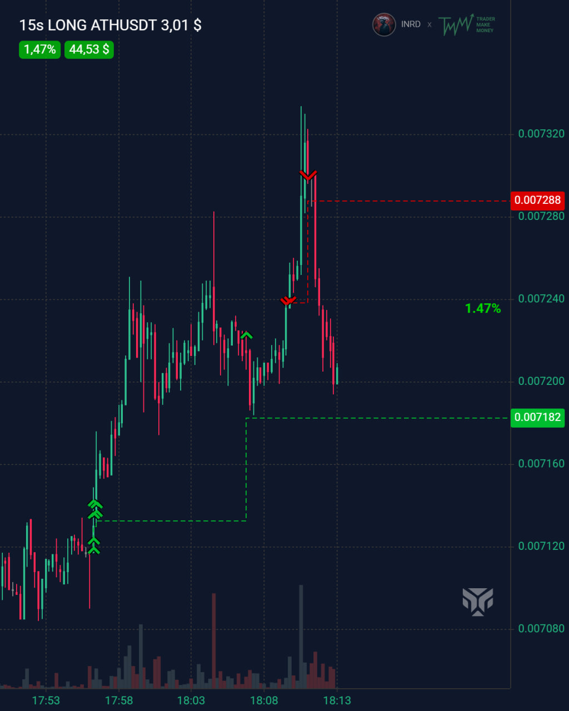
15 секунд · LONG · ATHUSDT
+1,47% · +44,53 $- Таймфрейм15 секунд
- НаправлениеLONG
- Отмеченные уровни0,007182 → 0,007288
- Расстояние1,47%
Таймфрейм 15 секунд, а в шапке стоит 3,01 $ — против 0,35–0,61 в остальных десяти сделках. Простой расчёт подтверждает: 44,53 $ ÷ 1,47% ≈ 3 030 $ объёма, тогда как у сделок 01–10 тот же расчёт даёт 370–680 $. Эта сделка была примерно в шесть раз крупнее остальных — и именно она дала 44,53 $, больше, чем весь итог дня. Так выглядит разъехавшийся объём: риск на сделку меняется в разы без причины, связанной с рынком.
Стоп против реального хода инструмента
Самый показательный срез: на четырёх скринах есть измеритель хода, и его можно сравнить с расстоянием до стопа.
| Сделка | Расстояние до стопа | Ход инструмента на скрине | Соотношение |
|---|---|---|---|
| 02 · MAGIC 1m | 1,36% | 2,99% за 5 минут | стоп меньше хода в 2 раза |
| 08 · JCT 1m | 3,35% | 1,87% за 1 минуту | стоп = меньше двух минут хода |
| 09 · LUMIA 1m | 1,01% (это был плюс) | 5,66% за 3 минуты | взяли в 5 раз меньше хода |
| 10 · MAGIC 5m | 1,57% | −36,19% за 20 минут | стоп не имеет отношения к риску |
Стоп в 1,5–3% на инструменте, который делает 1,87% за минуту, — это не защита, а лотерея: вас выбивает шумом в сделках, которые потом отрабатывают. И наоборот: тот же узкий стоп создаёт ощущение контроля там, где реальный риск измеряется десятками процентов (сделка 10).
Что я бы изменил в этой системе
- Фильтр режима перед входом. Сделки 04, 05, 06, 07 и 08 — это входы внутрь диапазона. Один вопрос «цена ходит между уровнями или обновляет экстремумы?» убрал бы пять сделок из одиннадцати.
- Стоп считать от волатильности, а не по привычке. Минимум — 1,5 ATR на рабочем таймфрейме. Если инструмент даёт 1,87% за минуту, стоп 1,36% не существует как понятие.
- Объём считать от стопа. При стопе 3% и позиции 500 $ риск — 15 $. При стопе 6% та же позиция рискует 30 $. Те же 500 $ при разном стопе — это разный риск, и его надо пересчитывать, а не оставлять «как обычно».
- Один риск на сделку. В подборке объём гуляет от 370 $ до 3 030 $ — это в шесть раз (сделка 11). При таком разбросе статистика перестаёт что-либо значить: результат определяется одной случайной крупной сделкой, а не системой.
- Лимит попыток на инструмент. LUMIA встречается шесть раз за сессию. Один-два входа на пару в день — и повторы после стопа перестают быть способом «добрать своё».
- Размер плюса важнее количества плюсов. Плюсы 09 и 11 — 5,48 $ и 44,53 $ при среднем минусе 11,77 $. Один плюс в 1% не компенсирует ни одного минуса в 2,3%: он просто создаёт ощущение, что «сегодня получилось».
Проблема этих одиннадцати сделок не в том, что рынок был плохой, и не в том, что мало плюсов. Проблема в трёх вещах, и все три — управляемые: входы внутрь диапазона, стопы меньше рыночного шума и размер позиции, который меняется без причины. Сделка 03 показывает, что вы умеете брать движение. Задача — перестать платить за это восемью минусами.
09 / ЧЕК-ЛИСТВосемь вопросов, на которые нужен ответ «да»
Отметьте пункты. Если хотя бы один не отмечен — сделки нет.
Итог
Лучшая сделка в боковике — та, которую не открыли.
Боковик не даёт преимущества, зато исправно забирает комиссию, стопы и дисциплину. Узнавать его несложно — сложно согласиться, что сегодня торговать нечего.
Объём позиции — не про смелость и не про «веру в идею». Это арифметика: риск делится на расстояние до стопа. Чем шумнее рынок, тем шире стоп и тем меньше объём. Тот, кто держит этот баланс, переживает серию убытков. Тот, кто держит объём, — нет.
Пять вещей, которые стоит унести: режим рынка решает, торговать ли вообще; стоп определяет объём, а не наоборот; два стопа в день — это сигнал остановиться, а не ускориться; кривая доходности без нового максимума — это тоже боковик; размер позиции, который меняется в разы без причины, превращает систему в лотерею.
Материал носит информационный характер и не является инвестиционной рекомендацией. Торговля на финансовых рынках связана с риском потери средств; прошлые результаты не гарантируют будущих. Все расчёты в примерах и в калькуляторе — иллюстративные, итоговые цифры зависят от условий вашего брокера, комиссий и ликвидности инструмента.